Partiel — octobre 2024
Répartition indiquée par les étudiants : digestif 6 pts · urinaire 3 pts · cardiovasculaire 4 pts · reproducteur/endocrinien 2 pts · lymphatique 3 pts · respiratoire 2 pts. Pour les « vrai ou faux », justifier si la proposition est fausse.
Système digestif
Quelles artères assurent la vascularisation de la grande courbure de l'estomac ?
Corrigé proposé
La grande courbure est vascularisée par l'arcade gastro-omentale (gastro-épiploïque) :
- l'artère gastro-omentale droite, branche de l'artère gastroduodénale (artère hépatique commune, tronc cœliaque) ;
- l'artère gastro-omentale gauche, branche de l'artère splénique.
Les artères gastriques courtes, issues de la splénique, vascularisent le fundus (partie haute de la grande courbure).
Quelles artères vascularisent la tête du pancréas ? (compléter : artère…, artère…)
Corrigé proposé
La tête du pancréas est vascularisée par les artères pancréatico-duodénales :
- les supérieures (antérieure et postérieure), issues de l'artère gastroduodénale (tronc cœliaque) ;
- les inférieures, issues de l'artère mésentérique supérieure.
Elles forment des arcades autour de la tête du pancréas et du duodénum.
Remettre dans l'ordre, du plus profond au plus superficiel, les couches (tuniques) de la paroi du tube digestif : sous-muqueuse, séreuse, muqueuse, musculaire.
Corrigé proposé
Du plus profond (côté lumière) au plus superficiel : muqueuse → sous-muqueuse → musculeuse → séreuse (adventice là où il n'y a pas de péritoine).
Quels sont les moyens de fixité (ligaments…) qui soutiennent le foie ?
Corrigé proposé
Moyens de fixité du foie :
- la veine cave inférieure, à laquelle le foie adhère par les veines hépatiques : c'est le moyen le plus solide ;
- le ligament coronaire et les ligaments triangulaires droit et gauche, qui l'attachent au diaphragme (area nuda) ;
- le ligament falciforme et son bord libre, le ligament rond ;
- le petit omentum (ligaments hépato-gastrique et hépato-duodénal).
La pression abdominale contribue aussi à le maintenir.
Dans quel cadran (quelle zone de l'abdomen) se projette le cæcum ?
Corrigé proposé
Le cæcum se projette dans la fosse iliaque droite (cadran inférieur droit).
Dans quel cadran se projette l'angle splénique (angle colique gauche) ?
Corrigé proposé
L'angle splénique se projette dans l'hypochondre gauche (cadran supérieur gauche). C'est l'angle colique le plus haut.
Vrai ou faux : l'entrée de l'estomac est le pylore et la sortie est le cardia.
Corrigé proposé
Réponse : FAUX. L'entrée de l'estomac est le cardia (jonction avec l'œsophage) ; la sortie est le pylore (vers le duodénum).
Vrai ou faux : les tuniques de l'estomac, du plus superficiel au plus profond, sont : séreuse, muqueuse, musculaire, sous-muqueuse.
Corrigé proposé
Réponse : FAUX. Du plus superficiel au plus profond : séreuse → musculeuse → sous-muqueuse → muqueuse.
Vrai ou faux : les tuniques musculaires de l'estomac, du plus superficiel au plus profond, sont : longitudinale, circulaire, oblique.
Corrigé proposé
Réponse : VRAI. La musculeuse gastrique comporte, de dehors en dedans, une couche longitudinale, une couche circulaire et une couche oblique (propre à l'estomac).
Vrai ou faux : chez la femme, la partie verticale de l'estomac est plus développée.
Corrigé proposé
Réponse : VRAI (selon le cours). Chez la femme, l'estomac est plus souvent allongé, en « J », avec une portion verticale plus développée. Chez l'homme, il est plus souvent court et horizontal (« en corne de bœuf »).
Vrai ou faux : le fond (fundus) de l'estomac est limité par une ligne qui passe au niveau du cardia.
Corrigé proposé
Réponse : VRAI. Le fundus est la partie de l'estomac située au-dessus d'un plan horizontal passant par le cardia (incisure cardiale).
Vrai ou faux : en arrière de l'estomac, on trouve le pancréas.
Corrigé proposé
Réponse : VRAI. Le pancréas est en arrière de l'estomac, séparé de lui par la bourse omentale (arrière-cavité des épiploons).
Vrai ou faux : la face supérieure (postéro-supérieure) du foie est directement en rapport avec le diaphragme.
Corrigé proposé
Réponse : VRAI. La face diaphragmatique (supérieure) du foie est moulée sous la coupole droite. La partie postérieure, l'area nuda, n'a pas de péritoine et est au contact direct du diaphragme.
Vrai ou faux : les appendices épiploïques sont des prolongements du péritoine.
Corrigé proposé
Réponse : VRAI. Les appendices épiploïques (omentaux) sont de petites franges de péritoine remplies de graisse, appendues le long du côlon.
Vrai ou faux : la transition entre l'intestin grêle et le gros intestin se fait au niveau de la valvule iléo- cæcale.
Corrigé proposé
Réponse : VRAI. L'iléon s'abouche dans le cæcum au niveau de la valve iléo-cæcale (de Bauhin).
Vrai ou faux : l'appendice cæcal peut être ascendant, descendant, externe ou interne.
Corrigé proposé
Réponse : VRAI. L'appendice a des positions variables : descendante (pelvienne), ascendante (rétro-cæcale), externe (latéro-cæcale), interne (médio-cæcale), voire sous-hépatique.
Vrai ou faux : le côlon transverse s'étend de l'angle hépatique à l'angle splénique.
Corrigé proposé
Réponse : VRAI. Le côlon transverse va de l'angle colique droit (hépatique) à l'angle colique gauche (splénique).
Vrai ou faux : le mésentère maintient l'intestin grêle.
Corrigé proposé
Réponse : VRAI. Le mésentère relie le jéjunum et l'iléon à la paroi abdominale postérieure ; il porte leurs vaisseaux et leurs nerfs.
Vrai ou faux : le pancréas possède deux canaux ; le canal secondaire (accessoire) est le canal de Santorini.
Corrigé proposé
Réponse : VRAI. Le canal principal est le canal de Wirsung, le canal accessoire celui de Santorini.
Vrai ou faux : le pharynx fait le lien entre la bouche et l'œsophage ; il dirige la nourriture vers l'œsophage et l'air vers le larynx.
Corrigé proposé
Réponse : VRAI. Le pharynx est le carrefour aérodigestif : il conduit les aliments vers l'œsophage et l'air vers le larynx.
Dentition permanente : comment les 32 dents se répartissent-elles sur les deux arcades ? (32 → 8 incisives, 4 canines, … prémolaires, … molaires)
Corrigé proposé
32 dents permanentes = 8 incisives, 4 canines, 8 prémolaires et 12 molaires, soit 16 par arcade (4 incisives, 2 canines, 4 prémolaires, 6 molaires).
Vrai ou faux : la dentine est la surface qui protège la dent (couronne).
Corrigé proposé
Réponse : FAUX. C'est l'émail qui recouvre et protège la couronne. La dentine est en dessous et entoure la pulpe.
Vrai ou faux : la pulpe dentaire est le lieu de passage de la vascularisation.
Corrigé proposé
Réponse : VRAI. La pulpe contient les vaisseaux et les nerfs de la dent, qui y entrent par le foramen apical.
Vrai ou faux : les dents sont ancrées dans les alvéoles par les ligaments parodontaux.
Corrigé proposé
Réponse : VRAI. La dent est fixée dans l'alvéole par le ligament alvéolo-dentaire, ou desmodonte (parodonte).
Schéma — vrai ou faux (duodénum et vertèbre L2) :
🖼️ Afficher le schéma 12 Ko
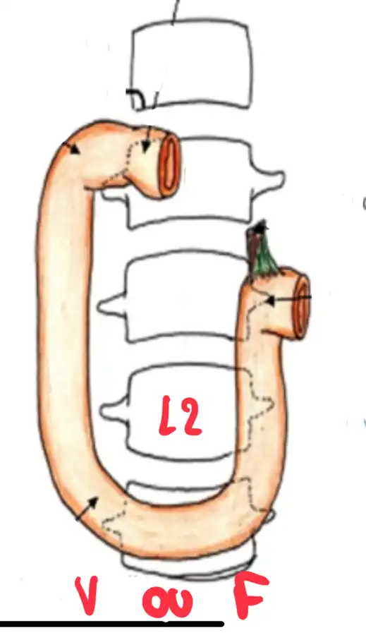
Corrigé proposé
Réponse : FAUX (le plus probable). Repères du cadre duodénal :
- D1 en regard de L1 ;
- D2 descend le long du flanc droit de L1 à L3, avec la papille vers L2 ;
- D3 croise L3 horizontalement ;
- D4 remonte jusqu'à l'angle duodéno-jéjunal, en L2 à gauche.
La vertèbre placée au niveau de la portion horizontale est donc L3 et non L2.
Système urinaire
Vrai ou faux : les uretères entrent dans le rein par sa face postéro-latérale.
Corrigé proposé
Réponse : FAUX. L'uretère naît du bassinet (pelvis rénal), qui sort du rein par le hile, sur son bord médial. C'est l'élément le plus postérieur du pédicule rénal. Il ne pénètre pas dans le rein par une face postéro-latérale.
Vrai ou faux : l'utérus est situé en arrière de la vessie et en avant du rectum.
Corrigé proposé
Réponse : VRAI. Chez la femme, l'utérus est entre la vessie, en avant, et le rectum, en arrière (cul-de-sac vésico-utérin en avant, recto-utérin de Douglas en arrière).
Système cardiovasculaire
De quelle couche (tunique) de la paroi veineuse les valves sont-elles un prolongement ?
Corrigé proposé
Les valves veineuses sont des replis de l'intima (tunique interne).
Que peut-on dire de la répartition de l'épaisseur du myocarde entre les différentes cavités ?
Corrigé proposé
Le myocarde est plus épais dans les ventricules que dans les oreillettes, et beaucoup plus épais dans le ventricule gauche (environ 3 fois le droit), qui éjecte dans la circulation systémique à haute pression. Le ventricule droit éjecte dans la petite circulation, à basse pression.
Vrai ou faux : les artères emmènent le sang des poumons vers le cœur et les veines emmènent le sang du cœur vers les poumons.
Corrigé proposé
Réponse : FAUX. Les artères partent du cœur, les veines y reviennent. Pour la petite circulation : l'artère pulmonaire va du cœur droit aux poumons, et les veines pulmonaires ramènent le sang oxygéné des poumons à l'oreillette gauche.
Vrai ou faux : l'artère pulmonaire naît du ventricule droit.
Corrigé proposé
Réponse : VRAI. Le tronc pulmonaire naît du ventricule droit, à l'infundibulum.
Vrai ou faux : la veine lombaire ascendante se jette dans la veine azygos.
Corrigé proposé
Réponse : VRAI (à droite). La veine lombaire ascendante droite se continue par la veine azygos. La gauche se continue par la veine hémi-azygos.
Légender le cercle artériel de la base du crâne (polygone de Willis) :
🖼️ Afficher le schéma 15 Ko
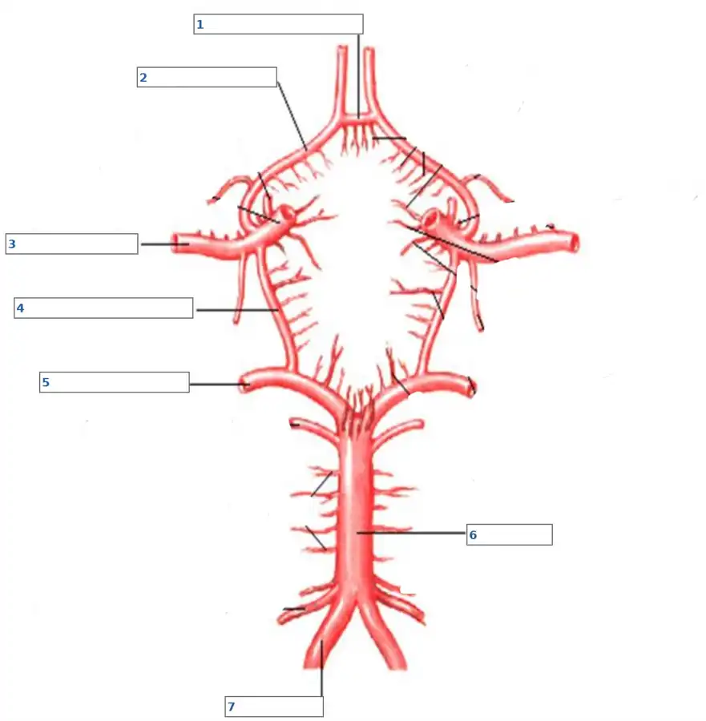
Corrigé proposé
Numérotation la plus probable :
- 1 : artère communicante antérieure ;
- 2 : artère cérébrale antérieure ;
- 3 : artère cérébrale moyenne (la carotide interne arrive à ce niveau) ;
- 4 : artère communicante postérieure ;
- 5 : artère cérébrale postérieure ;
- 6 : tronc basilaire ;
- 7 : artère vertébrale.
Légender les artères du membre supérieur :
🖼️ Afficher le schéma 16 Ko
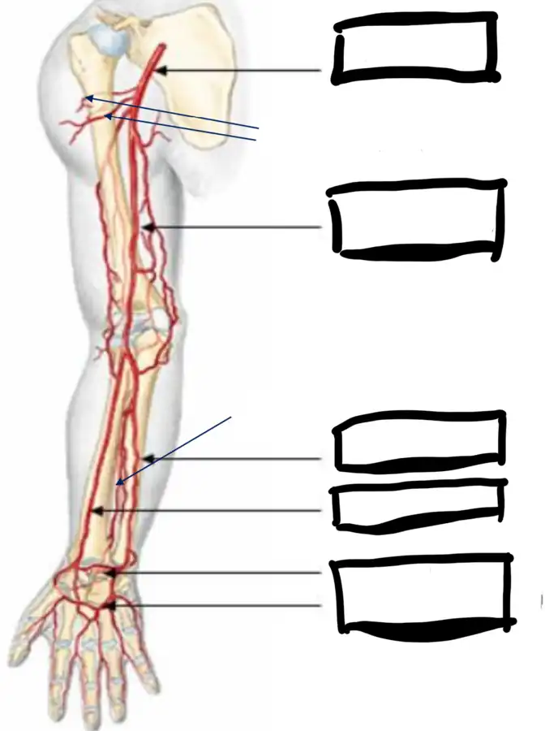
Corrigé proposé
De haut en bas :
- artère axillaire, avec ses branches circonflexes humérales, qui prolonge la subclavière ;
- artère brachiale (humérale) au bras ;
- au coude, division en artère radiale (en dehors, côté pouce) et artère ulnaire (cubitale) (en dedans), avec l'artère interosseuse entre les deux ;
- à la main, arcade palmaire superficielle (surtout ulnaire) et arcade palmaire profonde (surtout radiale).
Légender les veines du membre inférieur :
🖼️ Afficher le schéma 11 Ko
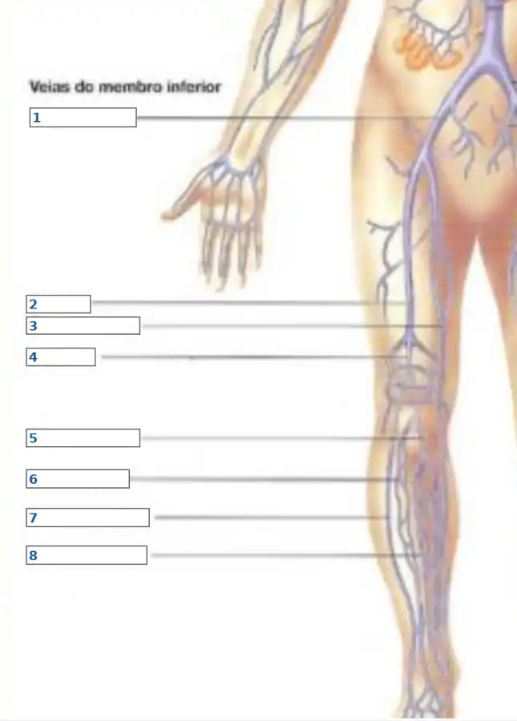
Corrigé proposé
Veines à placer :
- réseau profond : veines tibiales antérieures, tibiales postérieures et fibulaires → veine poplitée → veine fémorale → veine iliaque externe ;
- réseau superficiel : la grande veine saphène (face médiale, de la malléole médiale à sa crosse dans la fémorale, à l'aine) et la petite veine saphène (face postérieure de la jambe, qui se jette dans la poplitée).
Sur ce schéma (vue antéro-médiale), la numérotation probable est : 1 iliaque externe / fémorale, 2 fémorale, 3 grande saphène, 4 poplitée, puis 5 à 8 les veines de la jambe (tibiales, fibulaires, saphènes).
Système reproducteur et endocrinien
La jonction (l'angle) des petites lèvres forme : le mont du pubis ? le prépuce du clitoris ? … (choisir la bonne réponse)
Corrigé proposé
En avant, chaque petite lèvre se dédouble pour former le prépuce (capuchon) du clitoris et le frein du clitoris. En arrière, les petites lèvres se rejoignent à la fourchette vulvaire. Le mont du pubis est le relief graisseux situé au-dessus de la symphyse.
Quel est le muscle le plus profond : bulbo-spongieux, ischio-caverneux, transverse superficiel du périnée ou releveur de l'anus ?
Corrigé proposé
Le releveur de l'anus : il appartient au diaphragme pelvien, le plan profond. Le bulbo-spongieux, l'ischio-caverneux et le transverse superficiel appartiennent au plan superficiel du périnée.
Décrire le trajet du lait dans la glande mammaire (lobules, canaux galactophores…).
Corrigé proposé
Le lait est produit dans les alvéoles (acini) groupées en lobules, eux-mêmes réunis en lobes. Il passe dans les canaux lactifères de chaque lobule, puis dans les canaux galactophores, qui se dilatent en sinus lactifères sous l'aréole. Il sort par les pores du mamelon.
Vrai ou faux : l'espace rétréci entre la trompe de Fallope et l'utérus s'appelle l'isthme.
Corrigé proposé
Réponse : VRAI. La portion étroite de la trompe proche de l'utérus est l'isthme tubaire. Elle se poursuit par la portion interstitielle (intra-murale), dans la paroi utérine.
Vrai ou faux : les couches de l'utérus, du plus profond au plus superficiel, sont : endomètre, myomètre, périmètre.
Corrigé proposé
Réponse : VRAI. Du plus profond au plus superficiel : endomètre (muqueuse), myomètre (muscle), périmètre (séreuse).
Vrai ou faux : les cellules de Leydig produisent des androgènes, en particulier la testostérone.
Corrigé proposé
Réponse : VRAI. Les cellules de Leydig, interstitielles, sécrètent les androgènes, surtout la testostérone, sous l'effet de la LH.
Vrai ou faux : la thyroïde a deux lobes, un supérieur et un inférieur.
Corrigé proposé
Réponse : FAUX. La thyroïde a deux lobes, droit et gauche, reliés par un isthme, parfois avec une pyramide de Lalouette.
Vrai ou faux : la glande surrénale droite est plus postérieure que la gauche.
Corrigé proposé
Réponse : VRAI (selon le cours). La surrénale droite, pyramidale, est coiffée sur le pôle supérieur du rein et placée derrière la veine cave inférieure, contre le diaphragme. Elle est plus haute et plus postérieure. La gauche, semi-lunaire, descend sur le bord médial du rein jusqu'au hile ; elle est plus antérieure et plus basse.
Vrai ou faux : la glande surrénale est constituée d'une capsule, d'un cortex et d'une médullaire.
Corrigé proposé
Réponse : VRAI. Une capsule fibreuse, un cortex (zones glomérulée, fasciculée et réticulée) et une médullaire (adrénaline et noradrénaline).
Légender le schéma du testicule :
🖼️ Afficher le schéma 15 Ko
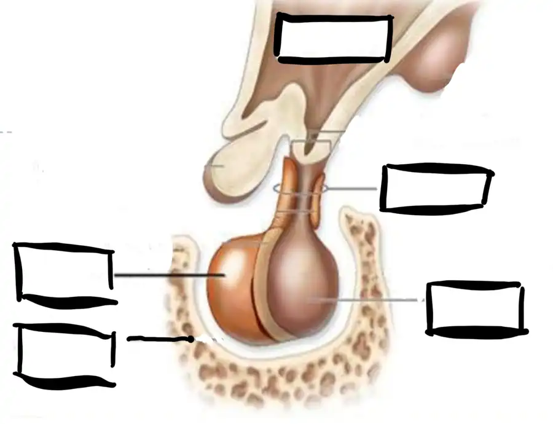
Corrigé proposé
Éléments attendus sur la coupe des bourses :
- cordon spermatique (canal déférent, artère testiculaire, plexus veineux pampiniforme) ;
- épididyme, coiffant le testicule (tête, corps, queue) ;
- testicule, entouré de l'albuginée ;
- vaginale (feuillets pariétal et viscéral) ;
- enveloppes des bourses : scrotum (peau, dartos) et fascias spermatiques.
Système lymphatique
Quels sont les pédicules lymphatiques du membre inférieur et quel est leur trajet ?
Corrigé proposé
Pédicules superficiels :
- saphène interne : il part du dos du pied, suit la grande veine saphène de dehors en dedans et se termine dans les ganglions inguinaux superficiels (supérieurs) ;
- saphène externe : il part du bord externe du pied, suit la petite veine saphène en arrière, perfore l'aponévrose dans le creux poplité et se termine dans les ganglions poplités.
Pédicules profonds : tibial antérieur et tibial postérieur, satellites des vaisseaux. Ils passent par les ganglions tibiaux, puis poplités, puis inguinaux profonds.
Voie finale : inguinaux profonds → iliaques externes → iliaques communs → lombo-aortiques → citerne du chyle → canal thoracique.
Quelle est l'unité fonctionnelle du système lymphatique et où se trouve-t-elle ?
Corrigé proposé
Le lymphangion : le segment de collecteur lymphatique compris entre deux valves. C'est l'unité contractile qui propulse la lymphe ; ses contractions sont stimulées par le drainage lymphatique manuel.
Vrai ou faux : les collecteurs lymphatiques superficiels du membre supérieur se drainent vers les nœuds lymphatiques axillaires.
Corrigé proposé
Réponse : VRAI. Les collecteurs superficiels du membre supérieur gagnent les ganglions axillaires. Exceptions : la chaîne céphalique peut rejoindre les ganglions sus-claviculaires (voie de Mascagni), et la voie de Caplan sert de voie alternative.
Identifier l'élément n° 3 :
🖼️ Afficher le schéma 17 Ko
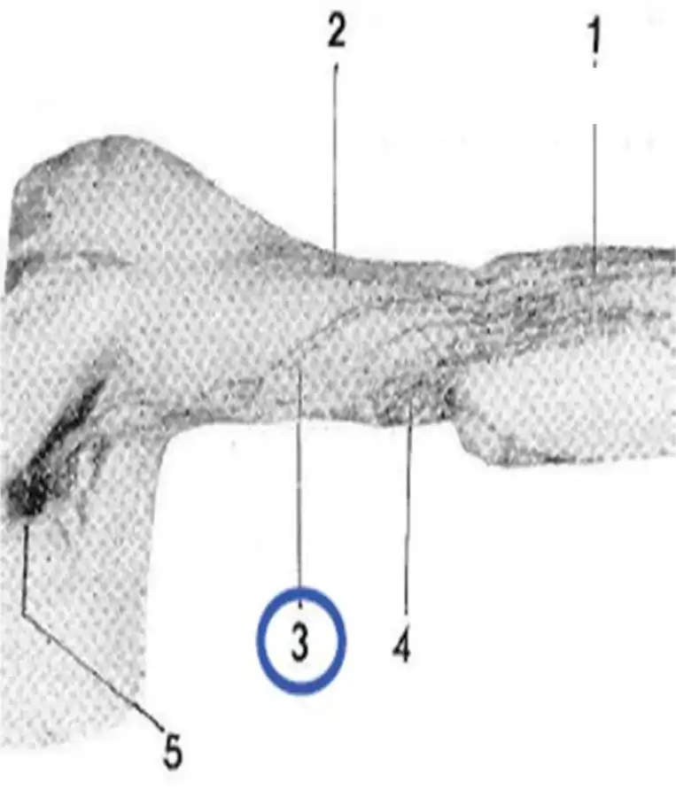
Corrigé proposé
Élément 3 : la chaîne pédiculaire bicipitale antérieure (3 collecteurs). Elle croise le bras en oblique, de dehors en dedans, du coude jusqu'à la base de l'aisselle. Sur le schéma, 5 correspond aux ganglions axillaires.
Identifier les éléments 1 et 2 :
🖼️ Afficher le schéma 16 Ko
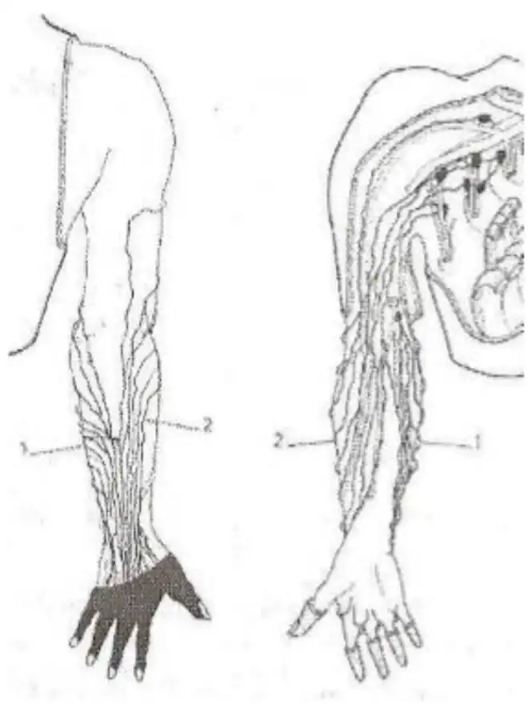
Corrigé proposé
- 1 : pédicule cubital (ulnaire), sur le bord médial de l'avant-bras ;
- 2 : pédicule radial, sur le bord latéral, côté pouce.
Ce sont les pédicules primaires de l'avant-bras, antérieurs sur la vue de face et postérieurs sur la vue de dos.
Système respiratoire
Vrai ou faux : il existe un épithélium cilié sur tout l'arbre bronchique.
Corrigé proposé
Réponse : FAUX. L'épithélium cilié s'arrête aux bronchioles terminales. Les bronchioles respiratoires et les alvéoles n'ont pas de cils : l'épithélium y devient cubique puis pavimenteux (pneumocytes).
Vrai ou faux : le diaphragme a une innervation bilatérale.
Corrigé proposé
Réponse : VRAI. Chaque hémi-coupole est innervée par son nerf phrénique (C3–C5), droit et gauche.
Vrai ou faux : les pneumocytes de type 2 produisent le surfactant.
Corrigé proposé
Réponse : VRAI. Les pneumocytes de type II, cubiques, sécrètent le surfactant et régénèrent les pneumocytes de type I.
Vrai ou faux : plus la paroi alvéolo-capillaire est épaisse, moins la diffusion des gaz est importante.
Corrigé proposé
Réponse : VRAI. Selon la loi de Fick, la diffusion est inversement proportionnelle à l'épaisseur de la membrane (exemples : fibrose, œdème).
Vrai ou faux : la plèvre pariétale est innervée.
Corrigé proposé
Réponse : VRAI. La plèvre pariétale est sensible, innervée par les nerfs intercostaux et phréniques ; c'est l'origine de la douleur pleurale. La plèvre viscérale est insensible.
Vrai ou faux : le larynx commence à l'étage sus-glottique et se termine à l'œsophage.
Corrigé proposé
Réponse : FAUX. Le larynx va de l'épiglotte (étage sus-glottique, vers C3) au bord inférieur du cartilage cricoïde (C6), où il se continue par la trachée. C'est le pharynx qui se continue par l'œsophage.
Vrai ou faux : l'oropharynx s'étend de la luette à l'épiglotte.
Corrigé proposé
Réponse : VRAI. L'oropharynx s'étend du voile du palais et de la luette jusqu'au bord supérieur de l'épiglotte (vers l'os hyoïde).
Vrai ou faux : en position orthostatique, les bases pulmonaires sont mieux ventilées que les apex.
Corrigé proposé
Réponse : VRAI. Debout, les alvéoles des bases sont moins distendues au départ, donc plus compliantes : elles reçoivent plus de ventilation, et aussi plus de perfusion.
Vrai ou faux : l'air que l'on respire contient 21 % d'O₂.
Corrigé proposé
Réponse : VRAI. L'air ambiant contient environ 21 % d'O₂ (20,9 %), 78 % d'azote et une trace de CO₂.
Légender le larynx :
🖼️ Afficher le schéma 10 Ko
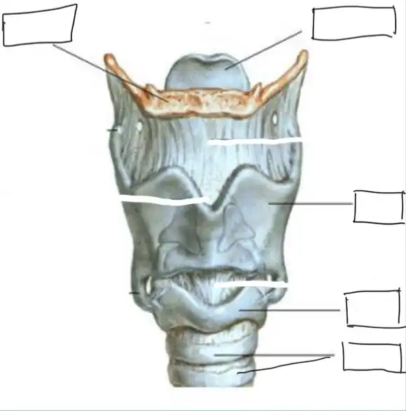
Corrigé proposé
Éléments attendus : os hyoïde (en haut, en orange), épiglotte (qui dépasse au-dessus), membrane thyro-hyoïdienne, cartilage thyroïde, ligament (membrane) crico-thyroïdien, cartilage cricoïde, anneaux cartilagineux de la trachée.
Partiel récent — questions remémorées
Système lymphatique
Vrai ou faux, et justifier si la proposition est fausse ou incomplète.
Ordonner le trajet de la lymphe, des capillaires lymphatiques jusqu'au tronc jugulaire (remettre les propositions données dans le bon ordre).
Corrigé proposé
Capillaires lymphatiques → pré-collecteurs → collecteurs (faits de lymphangions) → ganglions (vaisseaux afférents puis efférents) → troncs lymphatiques (ici le tronc jugulaire) → canal thoracique ou grande veine lymphatique → confluent veineux jugulo-subclavier.
Vrai ou faux : le lymphangion est l'unité de base du système lymphatique, située entre deux valves.
Corrigé proposé
Réponse : VRAI. Le lymphangion est le segment de collecteur compris entre deux valves : c'est l'unité contractile de base.
Vrai ou faux : les lignes de partage des eaux sont dépourvues de collecteurs lymphatiques.
Corrigé proposé
Réponse : VRAI. Les lignes de partage des eaux séparent deux territoires de drainage. Elles ne contiennent pas de collecteurs, seulement un réseau capillaire qui permet le passage d'un territoire à l'autre, ce qu'exploite le drainage lymphatique manuel.
Régions de drainage du canal thoracique — vrai ou faux : le canal thoracique draine le membre supérieur gauche.
Corrigé proposé
Réponse : VRAI. Le canal thoracique draine tout le corps sauf l'hémicorps supéro-droit, donc le membre supérieur gauche. Le droit est drainé par la grande veine lymphatique.
Les vaisseaux lymphatiques sont-ils présents dans tous les tissus ?
Corrigé proposé
Non. Ils sont présents dans presque tous les tissus, sauf le système nerveux central, les cartilages, l'os compact, la cornée, l'épiderme et la moelle osseuse.
Vrai ou faux : les nœuds lymphatiques principaux du membre inférieur sont les inguinaux superficiels et profonds, les poplités superficiels et profonds et les tibiaux antérieurs et postérieurs.
Corrigé proposé
Réponse : VRAI. Ganglions inguinaux superficiels et profonds, poplités superficiel et profonds, tibiaux antérieur et postérieur.
Vrai ou faux : le pédicule primaire est composé du pédicule cubital, du pédicule radial et du pédicule bicipital.
Corrigé proposé
Réponse : FAUX. Les pédicules primaires, à l'avant-bras, sont le radial antérieur, le cubital antérieur, le radial postérieur et le cubital postérieur (6 collecteurs). La chaîne bicipitale est un pédicule secondaire, au bras.
Vrai ou faux : la chaîne pédiculaire céphalique est constante.
Corrigé proposé
Réponse : FAUX. La chaîne céphalique est non constante. Sa variante qui passe devant la clavicule vers la chaîne cervicale transverse (voie de Mascagni) n'existe que chez environ 70 % des personnes.
Identifier l'élément n° 3 (même schéma que la question 49 de la session d'octobre 2024).
Corrigé proposé
Même schéma que la question 49 d'octobre 2024 : l'élément 3 est la chaîne pédiculaire bicipitale antérieure, oblique du coude vers la base de l'aisselle.
Identifier le collecteur entouré (n° 2) :
🖼️ Afficher le schéma 19 Ko
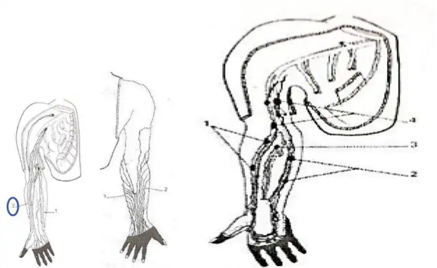
Corrigé proposé
Probablement la chaîne pédiculaire céphalique (bicipitale externe), sur le bord externe du bras, qui monte vers le sillon delto-pectoral. Le collecteur 1, en dedans, correspond à la chaîne basilique.
Système cardiovasculaire
Quelle est la différence de taille entre les oreillettes et les ventricules ?
Corrigé proposé
Les oreillettes sont plus petites et ont une paroi plus mince : ce sont des chambres de réception à basse pression. Les ventricules sont plus volumineux et plus musclés : ce sont les pompes. Le ventricule gauche est le plus épais.
Combien de veines pulmonaires arrivent au cœur ?
Corrigé proposé
Quatre veines pulmonaires, deux droites et deux gauches, qui se jettent dans l'oreillette gauche.
Vrai ou faux : l'épaisseur du myocarde est plus grande dans les oreillettes que dans les ventricules.
Corrigé proposé
Réponse : FAUX. Le myocarde est plus épais dans les ventricules, surtout le gauche, que dans les oreillettes.
Compléter le schéma du cercle artériel de la base du crâne :
🖼️ Afficher le schéma 20 Ko
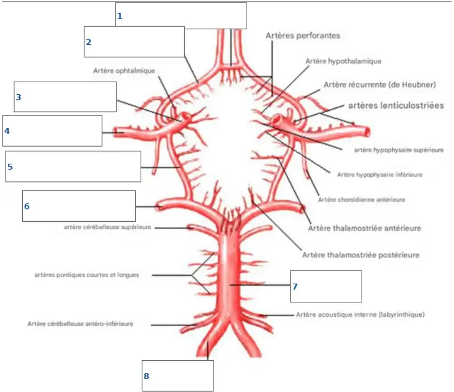
Corrigé proposé
Numérotation la plus probable :
- 1 : artère communicante antérieure ;
- 2 : artère cérébrale antérieure ;
- 3 : artère carotide interne ;
- 4 : artère cérébrale moyenne ;
- 5 : artère communicante postérieure ;
- 6 : artère cérébrale postérieure ;
- 7 : tronc basilaire ;
- 8 : artère vertébrale.
Compléter le schéma du cœur :
🖼️ Afficher le schéma 25 Ko
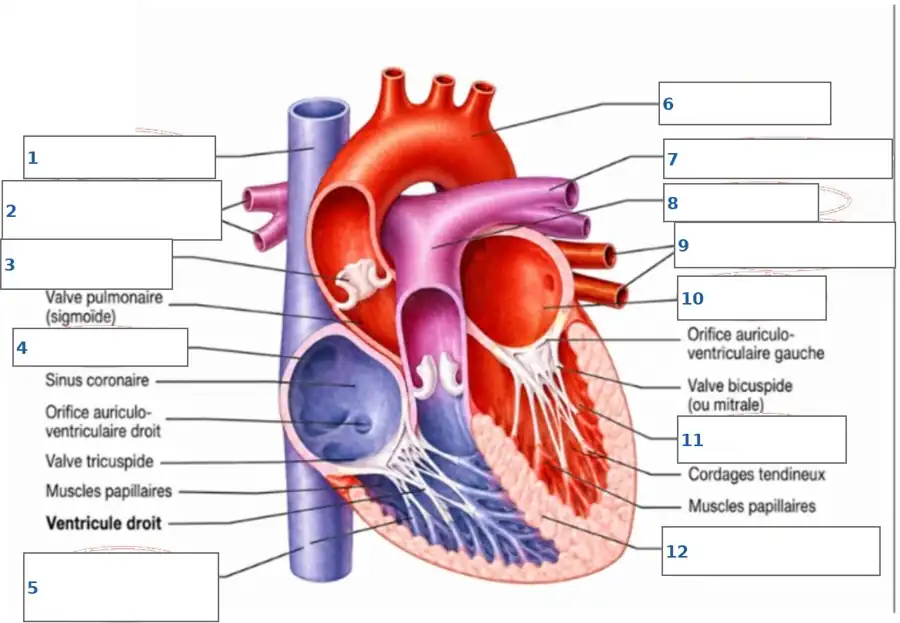
Corrigé proposé
Numérotation la plus probable :
- 1 : veine cave supérieure ;
- 2 : artères pulmonaires droites ;
- 3 : valve aortique (sigmoïde) ;
- 4 : oreillette droite ;
- 5 : veine cave inférieure ;
- 6 : aorte (crosse) ;
- 7 : artère pulmonaire gauche ;
- 8 : tronc pulmonaire ;
- 9 : veines pulmonaires ;
- 10 : oreillette gauche ;
- 11 : ventricule gauche ;
- 12 : myocarde, paroi épaisse du ventricule gauche.
Système respiratoire
Légender les cornets et les méats (supérieur, moyen, inférieur) :
🖼️ Afficher le schéma 11 Ko
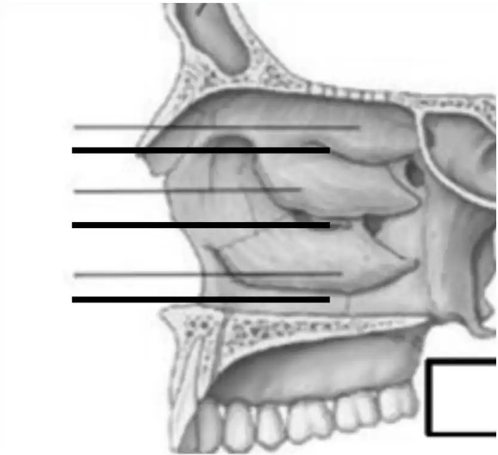
Corrigé proposé
De haut en bas : cornet supérieur, méat supérieur, cornet moyen, méat moyen, cornet inférieur, méat inférieur. Chaque méat est sous son cornet. Le cadre en bas correspond au palais (palais dur).
Identifier les pneumocytes de type I et de type II ainsi que le macrophage, et détailler leur fonction :
🖼️ Afficher le schéma 18 Ko
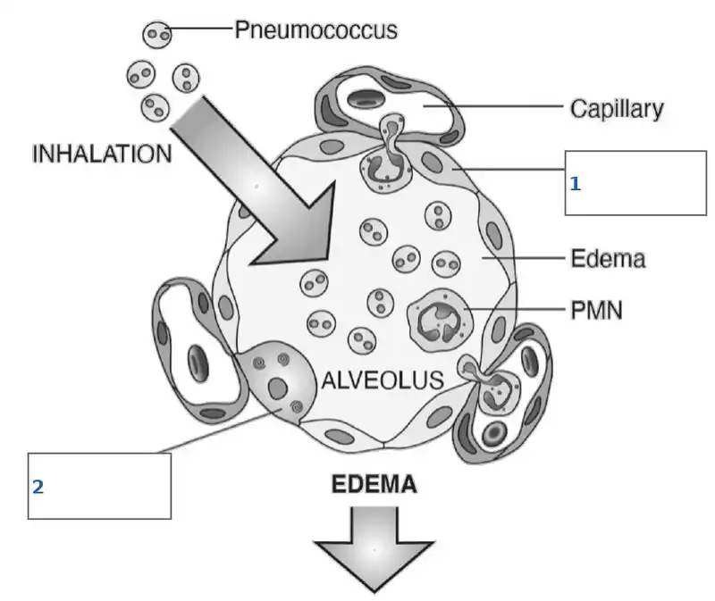
Corrigé proposé
- Pneumocyte de type I (1, qui tapisse la paroi alvéolaire) : cellule pavimenteuse très mince, qui couvre environ 95 % de la surface alvéolaire ; il forme la barrière alvéolo-capillaire des échanges gazeux.
- Pneumocyte de type II (2, cellule cubique à granules) : il sécrète le surfactant, qui diminue la tension superficielle et empêche le collapsus alvéolaire, et il régénère les pneumocytes I.
- Macrophage alvéolaire (« cellule à poussières ») : il phagocyte les particules et les micro-organismes arrivés dans l'alvéole.
Légender le schéma de l'arbre trachéo-bronchique (carina, trachée, cartilages, bronches de division primaire, secondaire et tertiaire) :
🖼️ Afficher le schéma 6 Ko
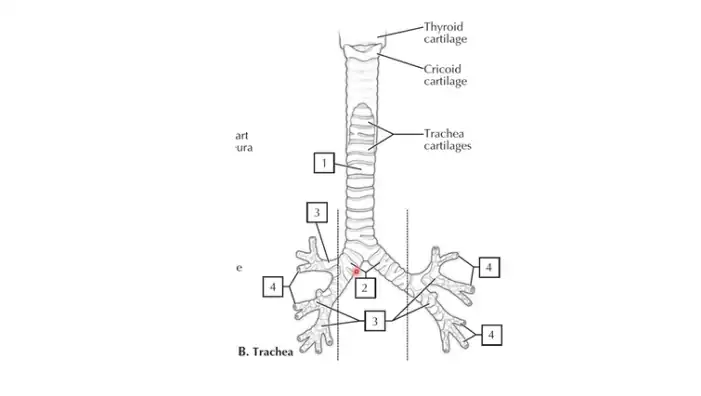
Corrigé proposé
- 1 : trachée, avec ses anneaux cartilagineux en fer à cheval, ouverts en arrière ;
- 2 : carène (carina), où la trachée se divise en bronches principales droite et gauche, les bronches de division primaire ;
- 3 : bronches lobaires, de division secondaire (3 à droite, 2 à gauche) ;
- 4 : bronches segmentaires, de division tertiaire.
Systèmes digestif et reproducteur
Choisir la mauvaise proposition. Les muscles du diaphragme uro-génital sont :
- Ale transverse superficiel du périnée
- Ble bulbo-spongieux
- Cl'ischio-coccygien
- Dle sphincter externe de l'anus
- Eils ne sont pas tous des muscles du diaphragme uro-génital
Corrigé proposé
Réponse : C (l'ischio-coccygien). Il appartient au diaphragme pelvien, avec le releveur de l'anus.
Le diaphragme uro-génital au sens strict, le plan moyen, comprend le transverse profond du périnée et le sphincter externe de l'urètre. Le transverse superficiel, le bulbo-spongieux et le sphincter externe de l'anus font partie du plan superficiel de la région uro-génitale et anale. Selon la définition du cours, la réponse E peut donc aussi se discuter.